用机器学习做点什么
毕业论文经验分享
presented by 陆玄青
分享内容概要

机器学习
Machine Learning
什么是机器学习
机器学习是用数据或以往的经验，以此优化计算机程序的性能标准。
A computer program is said to learn from experience E with respect to some class of tasks T and performance measure P, if its performance at tasks in T, as measured by P, improves with experience E.
小游戏：人肉学习
规则：程序会随机生成一个 0到1之间的小数，你要尽可能准确地猜测它的大小
提示：每次猜测后程序都会告诉你一个指标，指标的大小反映了你猜测误差的大小
PS：我也没那么严格，你把指标降到0.0001以下就算你赢了
刚才发生了什么
- T - tasks
- 尽可能准确地猜出数字大小
- P - performance measure
- 误差指标
- E - experience
- 你多次猜测后的获得的经验
小结：机器学习工作原理
所有机器学习都是这3步：
- 确定目标
- 量化误差
- 迭代
三类基本算法
- 线性回归 (linear regression)
- 分类 (classification)
- 聚类 (cluster)
线性回归
linear regression
根据一些变量的值来预测另一些变量的值（连续变量），例如根据面积、房龄预测房屋售价
它就像是建立一个$y$关于$x$的方程，只要输入特征变量($x$)，就能预测结果($y$)
一个小学数学水平的案例
已知在一个平面坐标系内有一些点，它们的$(x,y)$坐标如下：
| $x$ | 0 | 2 | 4 | 8 | 16 |
| $y$ | 1 | 5 | 9 | 17 | 33 |
如果告诉你这个平面上还有一个点，它的$x$坐标是10，那么你觉得他的$y$坐标该是多少？
数字太抽象了
我们通过可视化来观察一下
现实情况往往要复杂一些
不是每个点都正好在直线上
$y=kx+b$，$k$和$b$是你需要猜的数字
- 定义目标：用一个函数尽可能地拟合这些点
- 量化误差：loss=点到直线的距离（垂直方向上）
- 迭代：不断调整$k$和$b$，让loss尽量小
结合刚才玩过的智障游戏，再想一想这三个步骤
- 确定目标
- 量化误差
- 迭代
更复杂的情况
- 多个特征变量：$y=2x_1-5x_2$
- 非线性：$y=x^3-3x^2+2x$
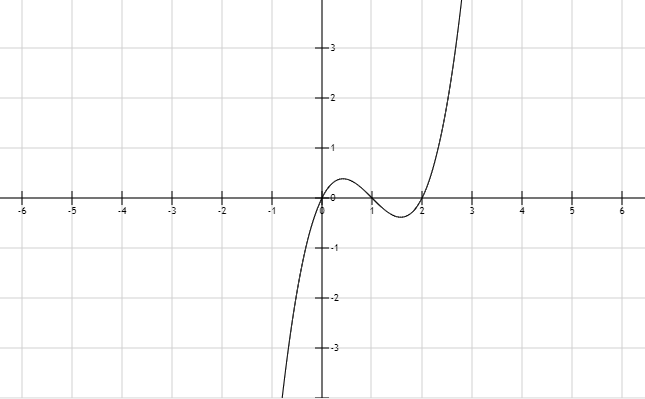
分类
classification
二分类问题
依然通过线性回归预测$y$的值：
当$y$超过某个阈值时，则认为它是第一类；
当$y$未达到某个阈值时，则认为它是第二类
多分类问题
转变为二分类问题来解决，以三分类为例：
- 判断是/不是第一类，得到一个概率值$P_1$
- 判断是/不是第二类，得到一个概率值$P_2$
- 判断是/不是第三类，得到一个概率值$P_3$
- 看$P_1 P_2 P_3$哪个最大就是哪个
聚类
cluster
聚类就是把一个数据集分成若干个子集，每个子集中的样本拥有相似的属性
它是一种 非监督学习
| 算法 | 类别 | 备注 |
|---|---|---|
| 回归 | 监督 | 要告诉机器每个$x$对应的$y$ |
| 分类 | 监督 | 要告诉机器每个样本对应的类别 |
| 聚类 | 非监督 | 不用告诉机器哪些样本是同一类 |
案例：鸢尾花的花瓣
已知有三个品种的鸢尾花，它们花瓣的长度和宽度各不相同。现有150朵鸢尾花花瓣的长宽数据，请问你能否把它们按品种归类？
刚才发生了什么
- 目标：在二维空间中找到三个中心点，让样本点到某个中心点的距离尽量近
- 量化误差：loss=样本点到中心点的距离
- 迭代：重新选择中心点，让loss尽量小
机器学习小结
当你手中有了若干样本的数据，你就可以用机器学习做这些事情：
- 回归：根据一些变量的值来预测另一些变量的值（连续变量），例如根据面积、房龄预测房屋售价
- 分类：根据一些变量的值来预测其种类（离散变量），例如根据三围预测性别
- 聚类：根据一些变量的值把样本分为若干类，例如根据对电影的评分为你推荐感兴趣的人（协同过滤）
take a 5-minute break
be free to ask me any question
下节预告： 论文交流
基于体态语言的设计固化识别方法研究
用机器学习
做了一点微小的工作
内容概要
- 背景知识介绍
- 实验数据的获取与分析
- 通过机器学习建立识别模型
背景知识
- 体态语言：可以粗浅地理解为 行为
- 设计固化：可以粗浅地理解为 方案重复
如何识别固化
| 特征变量 $x$ | 结果 $y$ |
|---|---|
| 各行为的频次 | 固化程度 |
用机器学习建立一个$y=f(x)$的方程
在建模的时候同时需要$x$和$y$（监督学习）
但是在建完之后，只要输入$x$就能预测出$y$
如何获得$x$（行为频次）
体态语言获取实验
对杯子进行造型的概念设计，观察被试的行为表现
目的是获取设计过程中会出现哪些行为，以及每个方案创作期间各行为的出现频次
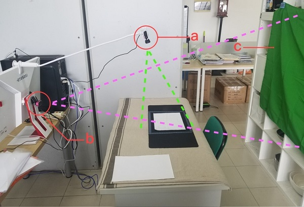设计行为谱
最后通过对12名被试的观察，得出了8种设计行为
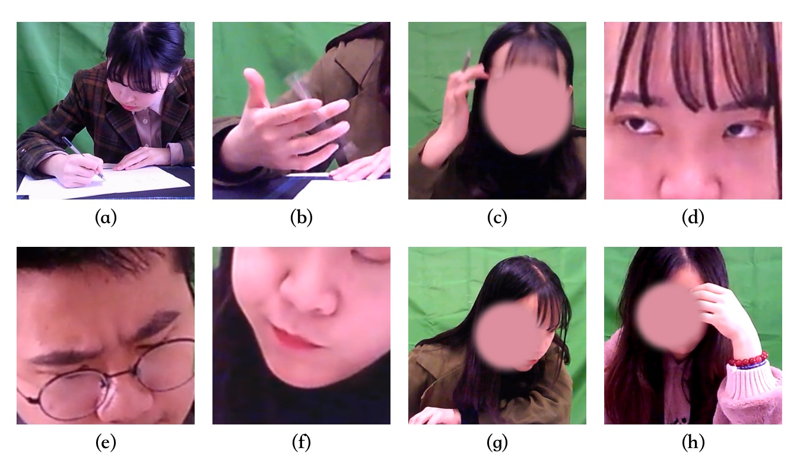如何获得$y$(固化程度)
固化程度评价实验
邀请6位专家对12名被试设计的158个方案草图进行评价，确定其固化程度
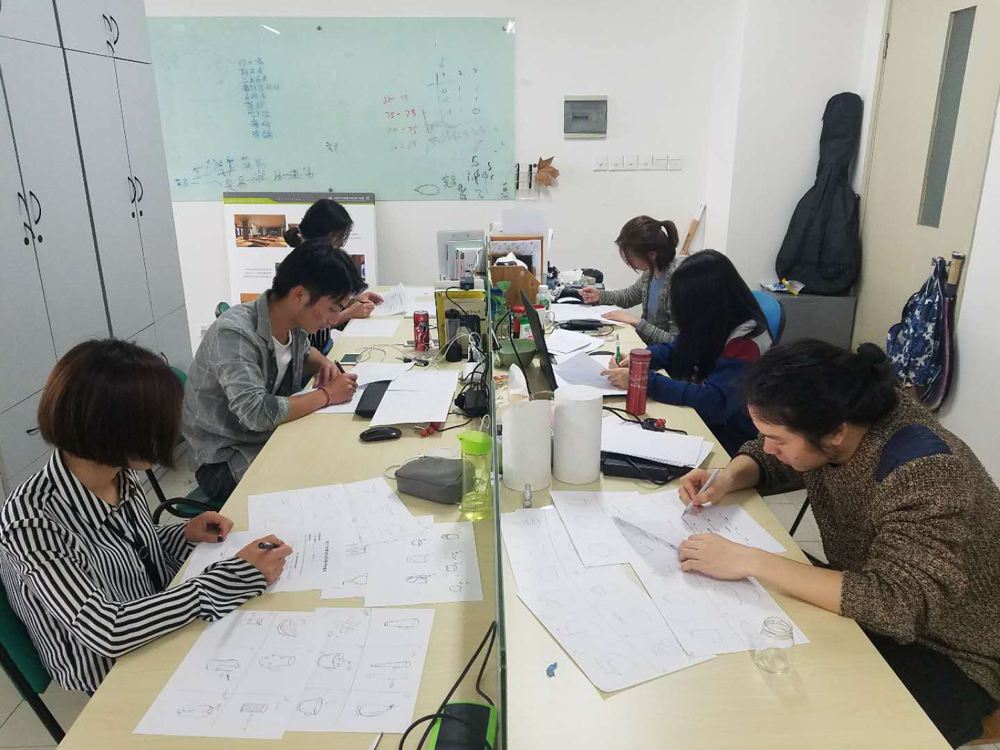固化程度评价方法
目前相关研究所用的方法主要是统计重复方案数量
我提出了两个评价指标以及一种改良的评价方法
- 经验性重复度：与已经画好的方案进行比较
- 先验性重复度：与事先已在脑中的方案进行比较
方案固化程度评价量表
两个评价条目：
- 先验性重复度
- 经验性重复度
每个条目0-30分
结果计算方法
每个方案固化分值的计算方法：
$f=\frac{\sum_{i=1}^n{PR_i+ER_i}}{2n}$
其中$PR$为先验性重复度；$ER$为经验性重复度
根据$f$可以对固化程度划分等级
| 分值范围 | 类别 |
|---|---|
| 0-10 | 轻微固化 |
| 11-20 | 中等固化 |
| 21-30 | 严重固化 |
评价结果
| 固化程度 | 数量 | 占比 |
|---|---|---|
| 轻微固化 | 55 | 34.8% |
| 中等固化 | 59 | 37.3% |
| 严重固化 | 44 | 27.8% |
单因素方差分析
用于检验不同水平对实验指标有无显著性影响
实验中要考察的指标称为实验指标，影响实验指标的条件称为因素，因素所处的状态称为水平。
- 实验指标
- 各行为的频次
- 因素
- 固化
- 水平
- 固化程度
结果
固化水平对以下三项指标有显著影响
- 画图频次
- 动眼频次
- 转头频次
皮尔森相关系数
反映两个变量的线性相关程度，一般用$r$表示
$r$的正负：相关性的正负，当$r>0$时表示两者正相关，反之亦然。
$r$的绝对值：线性关系的强弱，当$|r|=1$时表示两者是完全的线性关系；当$r=0$时表示不存在线性关系。
结果
固化分值与以下行为的频次显著正相关，但相关性不强
- 画图
- 动眼
- 动嘴
- 转头
小结
通过上述两个实验，取得以下成果：
- 获取了行为频次数据($x$)、固化程度数据($y$)
- 证明了固化程度对 画图、 动眼、 转头的频次有显著影响，并且存在显著相关性
所以，理论上我们可以建立一个$y$关于$x$的模型，只要统计一个方案创作期间设计师这三种行为的出现频次，就能知道这个方案的固化程度
通过机器学习识别设计固化
分两步走：
- 通过图像识别行为
- 通过行为统计识别固化
行为识别模型
作用：通过图像识别行为
用到了以下材料：
- Nvidia GTX 1060 显卡
- 深度学习框架Keras
- 经过预训练的VGG16卷积神经网络
- 体态语言获取实验中记录的视频
建模步骤
- 标注数据
- 数据增强
- 搭建模型
- 训练模型
- 交叉验证
- 可视化结果
1 标注数据
- 用premiere编辑视频，按行为类别切成片段后导出 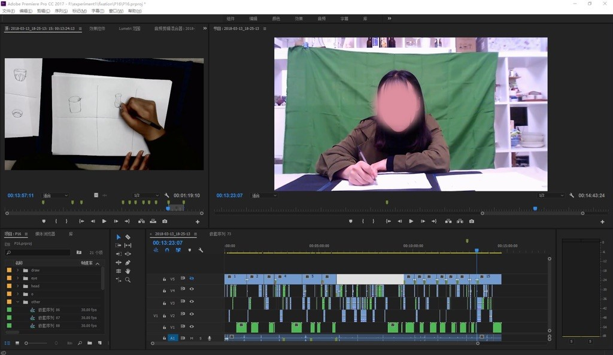
- 使用Python的图像处理库PIL、Imageio，以8帧/秒的速率对视频片段进行采样，保存成.jpg
2 数据增强
将原始图像进行随机缩放、旋转、反转、剪切等操作后生成新的图像用以扩充训练集的数据量。
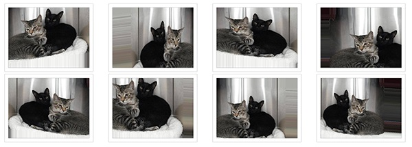Keras框架中有相关工具，实现起来非常简单
3 搭建模型
模型以VGG16作为基础的深度卷积神经网络，保留了其13个卷积层和相应的权值
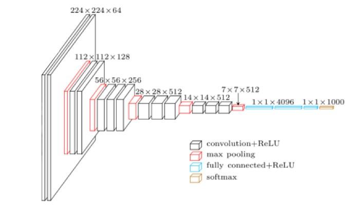然后在这13个卷积层后面加上了2个全连阶层，这两层的权值需要训练
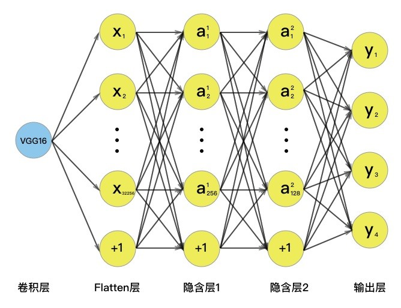4 训练模型
过程就是挂机，略过
但要多次调试参数，选其中最好的一次结果
5 交叉验证
把数据分成三份：训练集（60%）、验证集（20%）、测试集（20%）
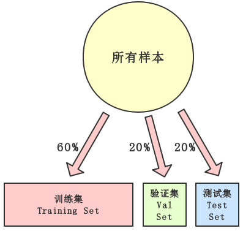6 结果可视化
正确率86.88%
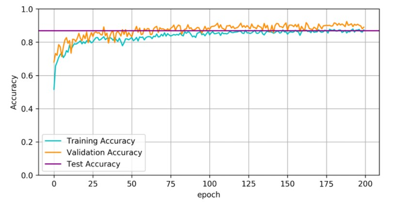固化识别模型
通过行为频次识别是否固化
用到了以下材料：
- 机器学习库Scikit-learn
- 行为统计数据（$x$）
- 固化程度评价实验的数据（$y$）
建模步骤
- PCA
- SVM
- K-fold交叉验证
- 结果可视化
PCA
用于对数据进行降维（4维 => 2维）
因为样本容量较小，减少特征变量的数量可以显著增加模型的准确度
PCA结果
SVM
支持向量机（Support Vector Machine）相比神经网络而言，在小样本训练条件下具有准确性高的优点
使用了四种配置建立四个模型，取性能最好的一个
| 模型编号 | 分类器类型 | 核函数 |
|---|---|---|
| Model A | SVC | Linear |
| Model B | SVC | RBF |
| Model C | SVC | Poly |
| Model D | LinearSVC | 无 |
K-fold交叉验证
适用于数据量较少，无法60%/20%/20%分的时候
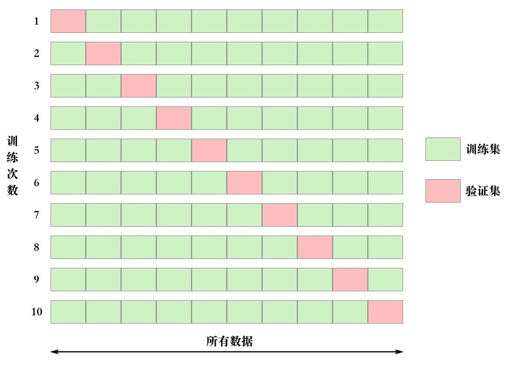结果可视化
四个模型中，Model B的平均正确率最高，达到72.31%
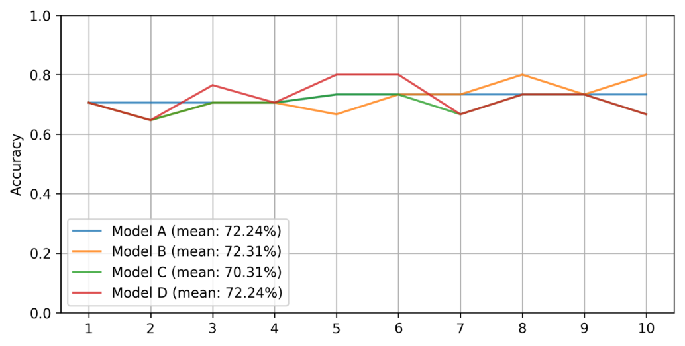Model B各次结果之间差别较小，标准差为4.69%，表明模型有较好的稳定性
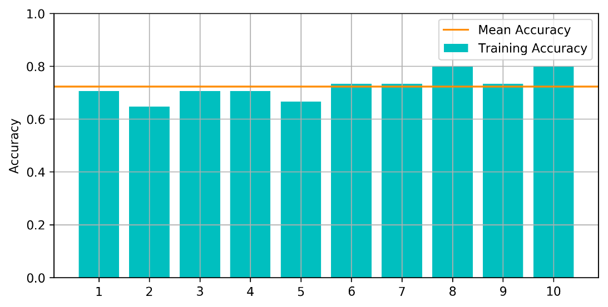x轴：成分1
y轴：成分2
黄点：非固化样本
蓝点：固化样本
蓝绿区域交界线：决策边界
处于边界内（绿色区域）的样本被模型识别为固化状态
识别系统原型开发
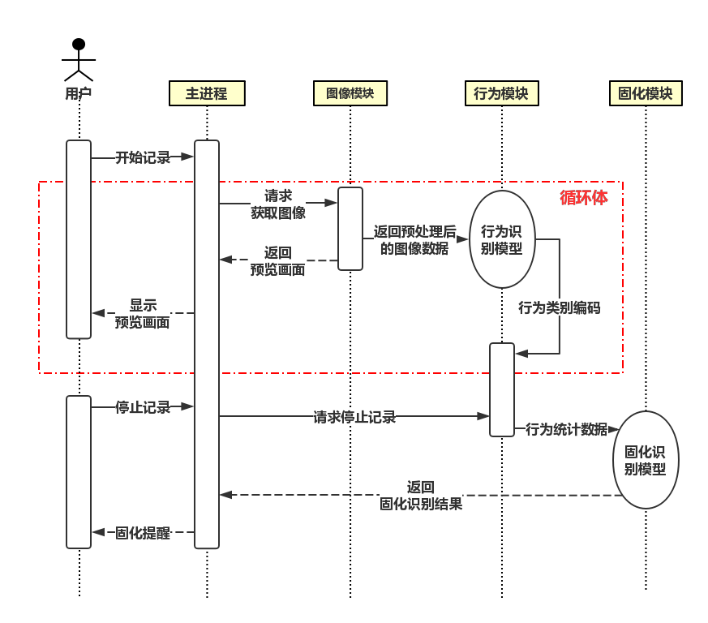某设计师正在使用本系统
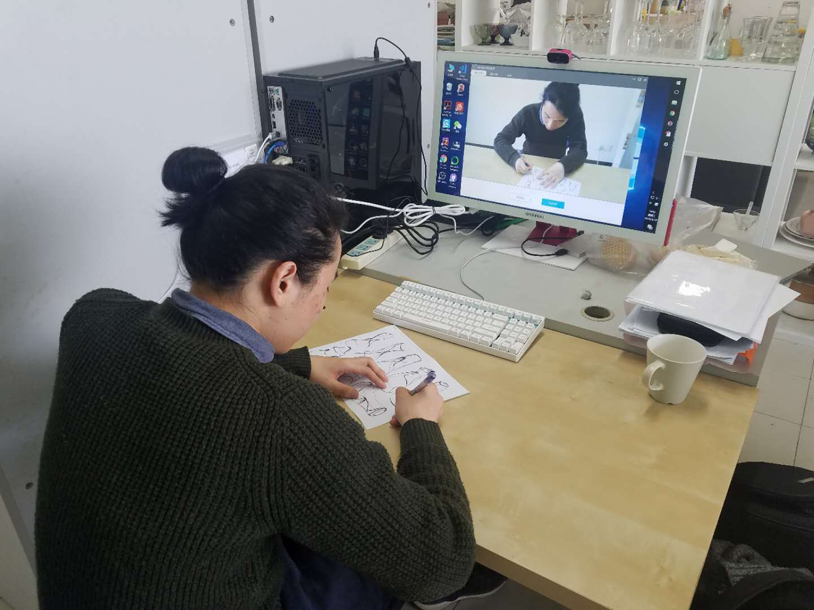总结
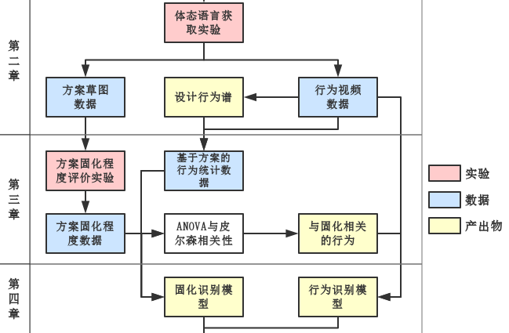反思
有一个坑你们尽量不要踩
主观评价误差非常大
take a 5-minute break
be free to ask me any question
下节预告： 论文撰写经验
论文撰写经验
不要把时间浪费在 “写”论文上
内容概要
- 时间安排
- 工具
-
word编辑技巧
时间规划
- 11月写好开题报告
- 寒假前跟老师沟通好论文的整体思路
- 开学前写完论文框架以及第一章内容（一万字）
- 3月前2周做完实验
- 清明节前写完初稿（三万字以上）
- 四月中旬交论文
文献管理工具
免费、Windows/macOS、跨设备同步、多人协作
搜索并添加文献演示
文件同步工具
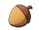免费、Windows/macOS、跨设备同步、多人协作
跨设备文件同步演示
作图工具
在线、免费、模板丰富
word编辑技巧
DIY (Don't Repeat Yourself)
- 所有格式都通过样式编辑，以便复用
- 所有图表都使用 题注和 交叉引用，以免修改序号
END
be free to ask me any question